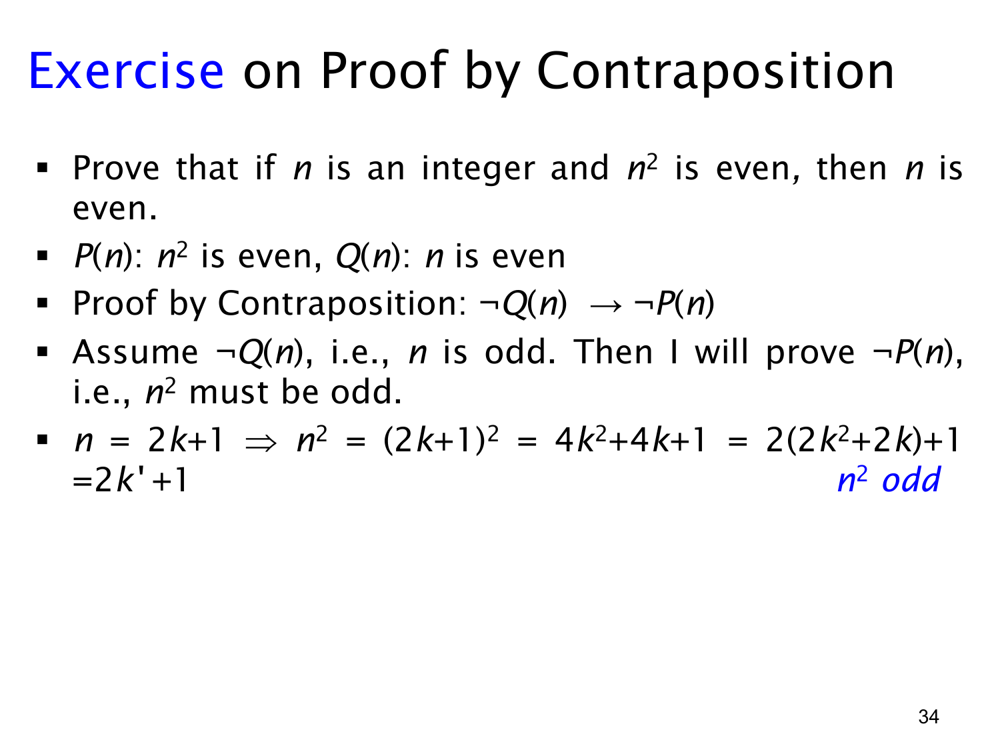

L1.3 · 第 34 页讲解原文
查看这一页课件

逆否证明练习：平方为偶数则原数为偶数
目标命题是：对整数 n，若 n2 为偶数，则 n 为偶数。设 P(n) 表示“n2 为偶数”，Q(n) 表示“n 为偶数”，要证明 P(n)→Q(n)。
课件改证逆否命题 ¬Q(n)→¬P(n)：若 n 不是偶数，则 n2 不是偶数。对整数，非偶数就是奇数，因此先假设 n 为奇数，按定义可写 n=2k+1，其中 k∈Z。接着计算
n2=(2k+1)2=4k2+4k+1=2(2k2+2k)+1.
令 k′=2k2+2k。由于 k′ 是整数，n2=2k′+1 是奇数，所以它不是偶数。逆否命题成立，而它与原命题逻辑等价，因此原命题得证。
这个推导正是前面“奇数的平方仍是奇数”的直接证明，只是现在把它放在另一个命题的逆否证明里使用。也说明已证明的定理或结论可以成为新证明的一部分。注意原命题的前件是“平方偶”，逆否命题的前件必须是“原数非偶”；只交换前后件而不同时否定，便不能得到等价命题。